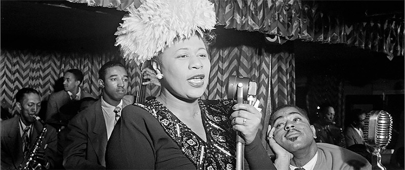

Ella Jane Fitzgerald was born in Newport News, Va. on April 25, 1917. Her father, William, and mother, Temperance (Tempie), parted ways shortly after her birth. Together, Tempie and Ella went to Yonkers, N.Y, where they eventually moved in with Tempie’s longtime boyfriend Joseph Da Silva. Ella’s half-sister, Frances, was born in 1923 and soon she began referring to Joe as her stepfather. To support the family, Joe dug ditches and was a part-time chauffeur, while Tempie worked at a laundromat and did some catering.

American jazz singer Ella Fitzgerald performing in Hamburg Germany 1964.
Their apartment was in a mixed neighborhood, where Ella made friends easily. She considered herself more of a tomboy, and often joined in the neighborhood games of baseball. Sports aside, she enjoyed dancing and singing with her friends, and some evenings they would take the train into Harlem and watch various acts at the Apollo Theater. In 1932, Tempie died from serious injuries that she received in a car accident.
Fitzgerald with Dizzy Gillespie, Ray Brown, Milt Jackson, and Timme Rosenkrantz in New York City, 1947.

The Spaniards called the region Tierradentro, suggested to be either because of the mountainous topography of the area, which generates the sensation of being closed in, or perhaps following the same theme, because of the numerous funerary Hypogea cut from the rock, filled with funerary remains and soil, so that the inhabitants were literally buried ‘Dentro da Tierra’ both within the Hypogea and the mountains surrounding them.


Most of our meals were eaten at the restaurant across the street from the hotel. Doña Eva makes excellent home cooked meals, and there are usually two or three choices for lunch and dinner. Meals ranged from COP$10,000 to $17,000.
The National Archaeological Park of Tierradentro is well known for its pre-Columbian hypogea, which were found in several excavations and in various archeological locations.
The typical hypogeum has an entry oriented towards the west, a spiral staircase and a main chamber, usually 5 to 8 meters below the surface, with several lesser chambers around, each one containing a corpse. The walls are painted with geometric, anthropomorphic and zoomorphic patterns in red, black and white. Some statues and remains of pottery and fabrics can be seen scarcely due to grave robbery before the hypogea were constituted as protected areas.
The precolumbian culture that created this funeral complex inhabited this area during the first millennium A.C. Tierradentro Archaeological park features hypogea dating from 6th to 9th centuries AD. The details in the sculptures and pictoric patterns are similar to the San Agustín culture.


Most of our meals were eaten at the restaurant across the street from the hotel. Doña Eva makes excellent home cooked meals, and there are usually two or three choices for lunch and dinner. Meals ranged from COP$10,000 to $17,000.
If you want to try some other places to eat, your choices are limited. La Portada has the best (and only) restaurant in San Andrés, but there are a few limited choices by the park entrance about a 20 minute walk downhill. They didn’t look appealing at all.
After one hike, there was a woman who set up a tent on the corner near La Portada. She was offering a local stew called mote. We decided to sit and try this meal, which is basically like traditional Colombian sancocho but with corn and beans instead of vegetables. Our meal cost COP$16,000 for two including drinks.

““Visited Tierradentro just recently (November, 2011). Visiting all 5 places (Segovia, El Duande, El Tablon, San Andres and Aguacate) requires at least full day on foot or riding a horse best experience If you like walking””

““I visited Tierradentro, which is set in beautiful and spectacular mountain scenery.I began my visit by going first to the attractive and informative museum to learn something of the culture that flourished here about 1300 years ago"”

““It is possible to visit most of the best tombs on foot. I walked first to Segovia where there are more than 30 tombs, of which about 6 are lit and visitable,”

Most of our meals were eaten at the restaurant across the street from the hotel. Doña Eva makes excellent home cooked meals, and there are usually two or three choices for lunch and dinner. Meals ranged from COP$10,000 to $17,000.
La Portada, a small hotel and restaurant run by a sweet couple who have been welcoming tourists for over 40 years. The owner started by selling breakfast to tourists in the 1970s and eventually built a lovely bamboo hotel with spacious rooms.
$60,000 per night for a double room and stayed three nights. Breakfast was included in the rate. The immaculate rooms have some of the thickest mattresses found in Colombia; it’s a great place to relax after a hard day exploring.
La Portada Hospedaje’s bathrooms are modern with hot water; which is a rarity for hotels in Tierradentro. The restaurant for La Portada is directly across the street from the hotel and is open every day into the evening serving a variety of food and drinks to Tierradentro’s visitors. Additionally, each and every room in the hotel comes with a view of the mountains of Tierradentro.